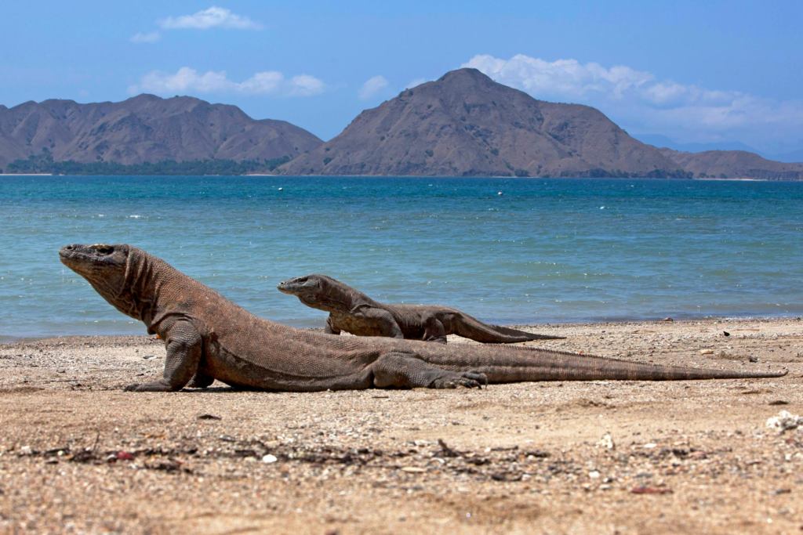
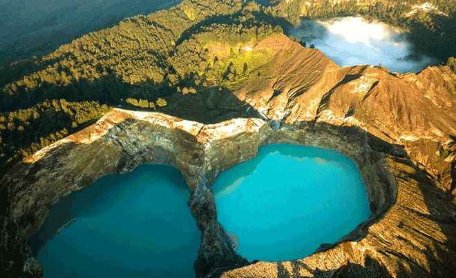
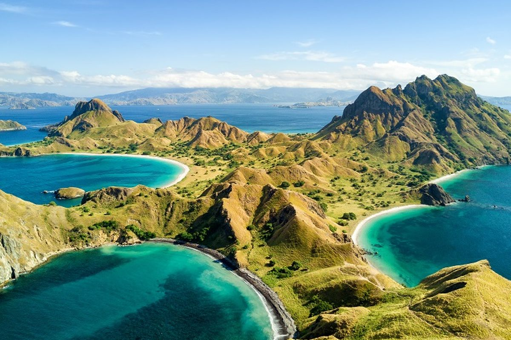
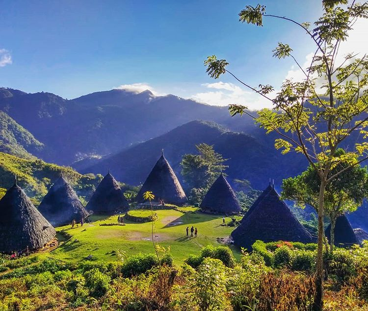
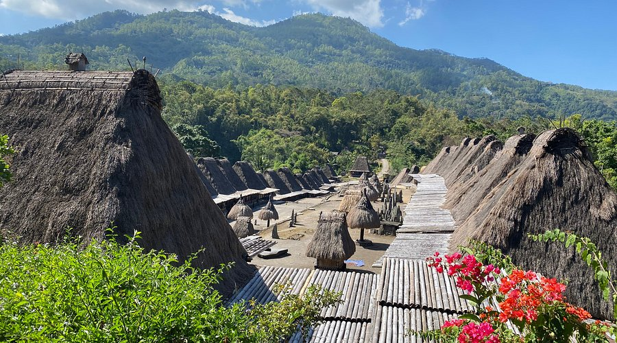
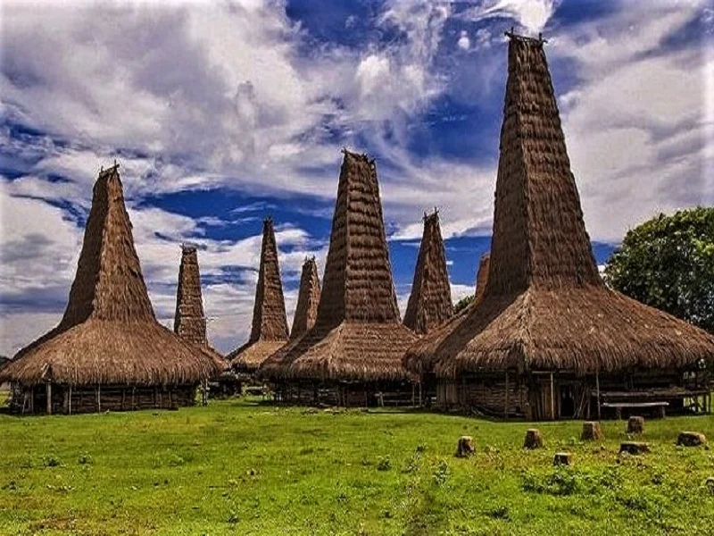
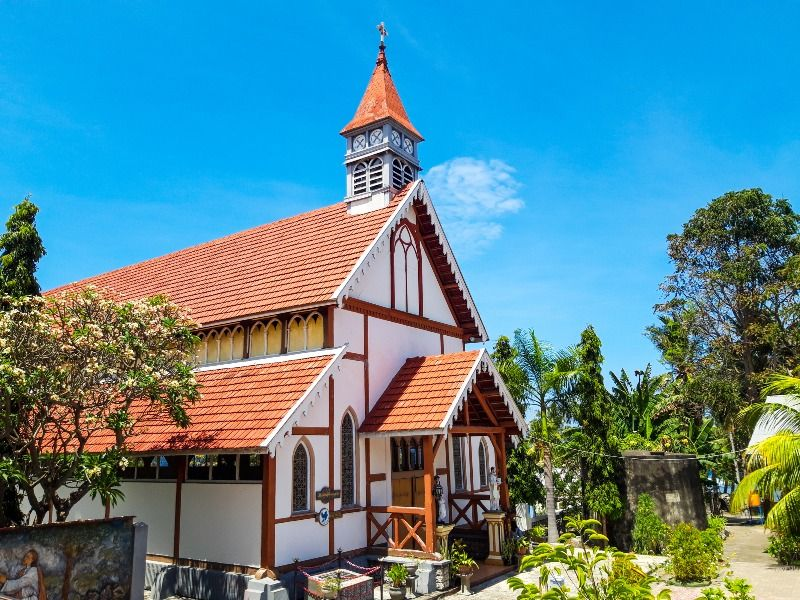
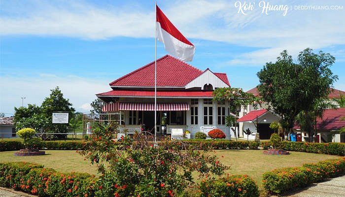

di mana cahaya keemasan memeluk siluet bukit purba dan laut tenang dalam harmoni senja yang tak terlupakan selamanya di jiwa.

Lokasi: Labuan Bajo, Kabupaten Manggarai Barat.
Habitat asli Komodo dan situs warisan dunia UNESCO dengan pemandangan bawah laut yang memukau.

Lokasi: Desa Pemo, Kecamatan Kelimutu, Kabupaten Ende.
Danau kawah tiga warna di puncak gunung yang warna airnya dapat berubah secara alami.

Lokasi: Kawasan Taman Nasional Komodo, Kabupaten Manggarai Barat.
Perbukitan eksotis yang menawarkan panorama spektakuler tiga teluk dengan warna pantai berbeda.

Lokasi: Desa Satar Lenda, Kecamatan Satarmese Barat, Kabupaten Manggarai.
Desa tradisional di atas awan dengan rumah kerucut ikonik Mbaru Niang yang mendunia.

Lokasi: Desa Tiwuriwu, Kecamatan Jerebuu, Kabupaten Ngada.
Perkampungan megalitikum di kaki Gunung Inerie yang masih memegang teguh adat leluhur.

Lokasi: Kampung Adat Praijing, Kecamatan Tebara, Kabupaten Sumba Barat.
Rumah tradisional Sumba dengan menara tinggi menjulang yang melambangkan status sosial serta tempat bersemayamnya roh leluhur (Marapu).

Lokasi: Desa Sikka, Kecamatan Lela, Kabupaten Sikka, Flores.
Gereja bersejarah peninggalan kolonial Portugis dan Jesuit yang unik karena dinding interiornya dihiasi motif Tenun Ikat Sikka (motif Sikka Tang).

Lokasi: Jl. Perwira, Kota Ende, Kabupaten Ende.
Situs bersejarah tempat Bung Karno merenungkan Pancasila selama masa pengasingan.